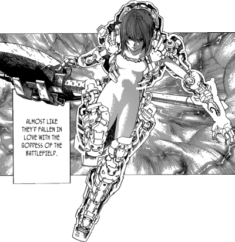
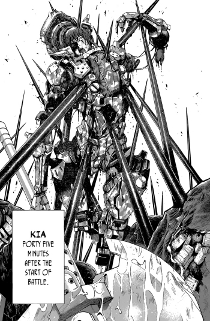
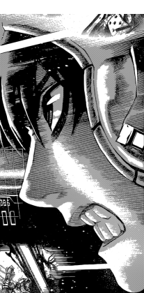

Chances are, that you have never heard of either Hiroshi Sakurazaka or his sci-fi light novel All You Need Is Kill (unless you are a Japanese teenager). Then again, chances are, that you have heard of, or have seen, Edge of Tomorrow, a science fiction thriller starring Tom Cruise and Emily Blunt. And if I will tell you that the latter is based on the former, it will all start making sense.
In Japan, a light novel is a very popular form of publication. Light novels, which evolved from pulp fiction magazines, are primarily targeted at middle and high school students. The stories are often serialised in various youth magazines before being collected in book form. If a particular light novel becomes popular, it will, more often than not, follow the well-trodden path: novel > manga > anime. And, in very rare cases, as it was with All You Need Is Kill, the novel is so good or its story so original, that it gets noticed by the suits in Hollywood and gets made into a live-action film (but not before being relocated from Japan to the West and re-cast by western characters, needless to say).
All You Need Is Kill is a story of a young recruit of the United Defence Force, Keiji Kiriya. United Defense Force is an international task force, which was established to deal with the grave threat of Mimics - a mysterious alien organisms, which invaded the Earth and seem to be bent on utter destruction of the whole human race. All attempts of communication with Mimics have failed and now only the elite units of the United Defence Force stand between the Mimics and the complete and total annihilation of humanity.
Hapless rookie Keiji is killed on his very first sortie, but then through some inexplicable phenomenon wakes up in his bunk, having returned to the day before the battle. Keiji at first thinks that maybe he was just having a particularly nasty nightmare, but when he keeps dying in the battlefield and then waking up in his bed, he gradually realises the horrifying truth: somehow, he has been caught in an endless time loop, where his death and resurrection repeat time and time again. The rules of this bizarre happening are a few and simple: 1) Whatever way he dies (he, in a total desperation, attempts even a suicide as a way to break out from the loop) he always wakes up in his bunk on the morning of the day before the battle. 2) He somehow retains the memories from all the previous loops.
 After Keiji gets through the initial (understandable) stages of denial and desperation, it dawns on him that he can use the latter feature of this accursed time loop to his advantage. He gradually learns from all his previous missteps and past mistakes on the battlefield and, now with the invaluable benefit of hindsight, his skills and successes as a soldier grow exponentially as he passes through each time loop. Eventually, after going through well over 100 time loops, former greenhorn Keiji matures into an experienced, battle-worn war veteran, an accomplished martial arts expert, the ultimate killing machine, capable to predict every move, every attack and every retreat of the enemy, much like an expert chess player can predict every move of his opponent and all possible outcomes of a particular chess game, and is finally ready to confront his adversaries.
There is really not much negative that can be said about All You Need Is Kill. If I wanted to be really nit-picking, I could point out that the story is a bit naïve, but judging this superb manga by its storyline would be doing it a gross injustice. After all, this is not an original literary work, but a faithful adaptation of the aforementioned novel by Hiroshi Sakurazaka, which meant that the manga authors were somewhat restricted in their ability to deviate from the original work.

That said, Takeshi Obata’s interpretation of Mimics is a bit on the unrealistic side (just try to imagine, how would these oversized sea urchins, for instance, move from place to place), but then again, their formidable javelins sure do look the business! Nit-picking aside, All You Need Is Kill is the very best there is that the manga genre has to offer - this is a pure graphic masterpiece - an absolute must for any fan of science fiction manga.